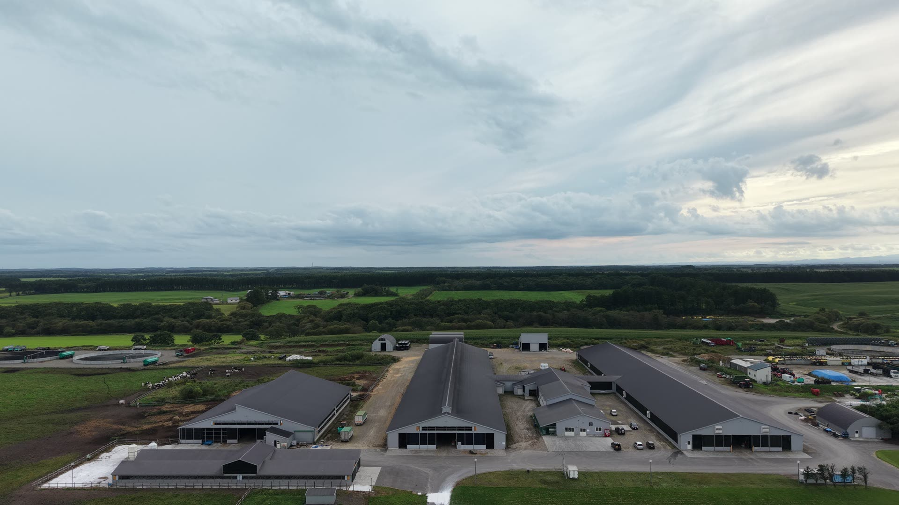
Betsukai, Hokkaido — Since 1948
別海町で三代、1,200頭の牛とともに。
Our Philosophy
感謝の気持ちを大切にし
地域とともに
先駆者として、常にワクワク魅力ある牧場を目指す
1948年、初代・島崎昭七が別海町泉川に入植してから三代。
自給飼料中心の循環型酪農を軸に、肉牛・加工販売・家畜流通へと歩みを広げてきました。
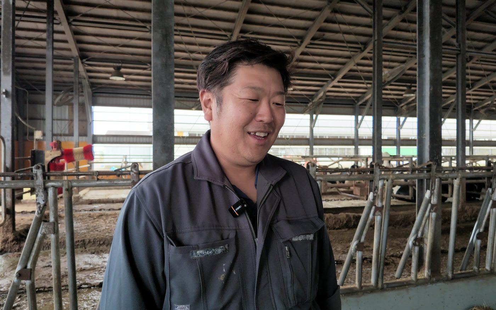
In the milking barn — 搾乳牛舎で（2026.9.15）
Voice — 三代目
ミルワングランプリ 2026 ─ 第2位
組合員の牧場の牛乳を番号だけで飲み比べて順位を決める、ちえのわの「ミルワングランプリ」。2026年、ジェイファームシマザキの牛乳が第2位に選ばれました。5〜6回目の出品で、初めての入賞です。
こだわりを聞かれて、代表の答えは「こだわりっていうこだわりはない。当たり前のことをちゃんとやってるだけ」。特別な資材も裏技もない。その「当たり前」を、牧場を歩きながら聞きました。
三代目代表 島崎 洋介
Five rules
01
「特段これを使えばとか、こうすればっていうのはない」。餌のメニューは乳成分を見ながら微調整する。それを毎日、全部やる。
02
デントコーンと牧草が軸。分娩後・泌乳ピーク・乾乳前で牛群を分け、群ごとに餌を組む。同じ餌でも季節と寒暖差で合わなくなる。「いいと思って組み替えても、実は良くなかったとか」。
03
サイレージは発酵品質にいちばんこだわる。基本は乳酸菌、ギ酸は水分の多い早い草のときだけ。「良いサイレージは、牛が食って、乳が出るサイレージ」。
04
あえてロボットでなくパラレルパーラー。牛乳が急に出なくなった牛を、目で見つける。可動部は地下に置き、牛も人も静かに働ける。
05
乾乳・分娩舎は、牛舎の移動ひとつで分娩事故が増える。子牛は2ヶ月で離乳。「子牛のときに元気に育っていないと、いい乳牛にはならない。本当にならない」。
Farm journal
Shot on 15 September 2026 — 取材の日の記録
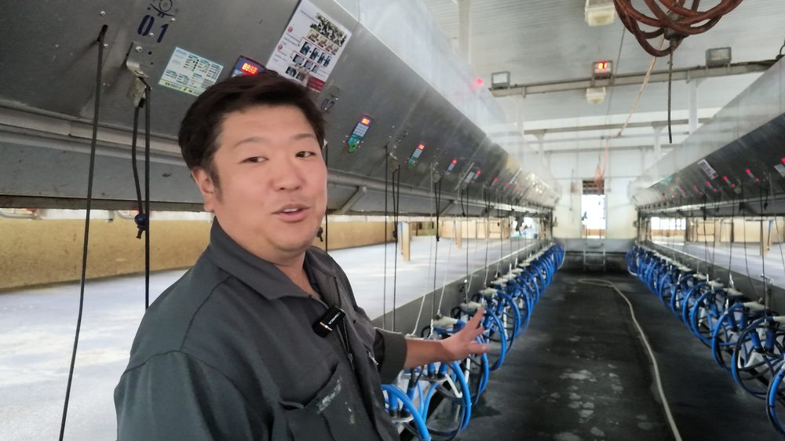
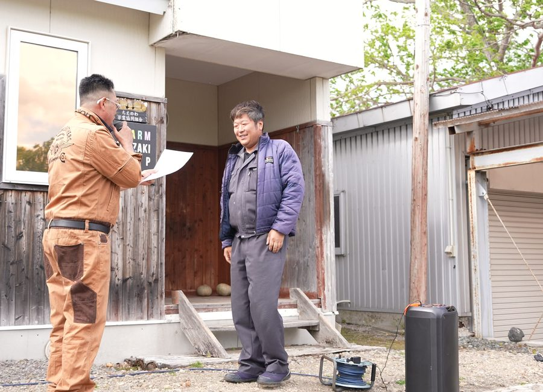
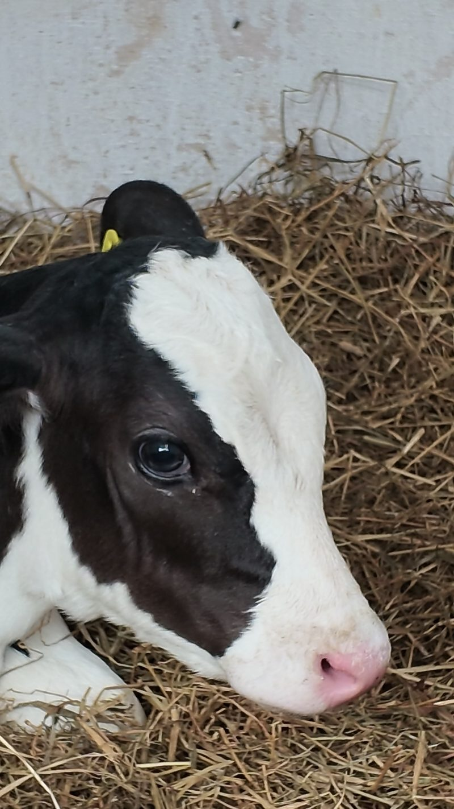
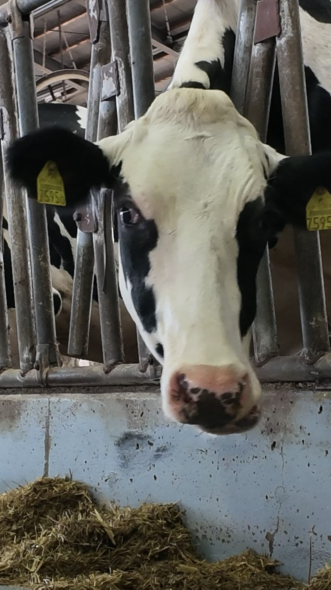
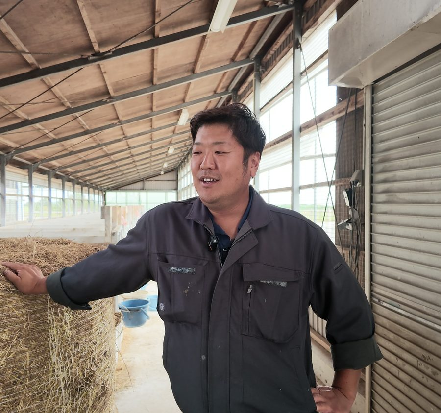
Our Business
酪農・肉牛・加工販売・家畜流通。生産から食卓まで、循環で繋ぐ4部門。本社牧場・第2牧場・共栄牧場の3拠点で、牛のライフステージ別に専門施設を整備しています。
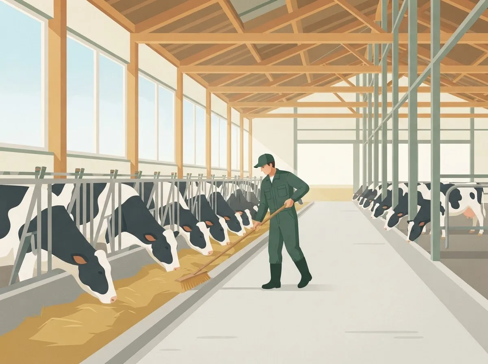
The morning barn — 朝の牛舎
01 — Dairy
自給粗飼料中心の循環型酪農
所有290ha＋借地200haの草地で生産した粗飼料を中心に、堆肥還元による循環型の酪農を実践。一棟400頭の搾乳牛舎が二棟並び、パラレルパーラーで毎日朝晩、人の目で一頭ずつ見ています。2024年からはA2ミルクの生産も開始しました。
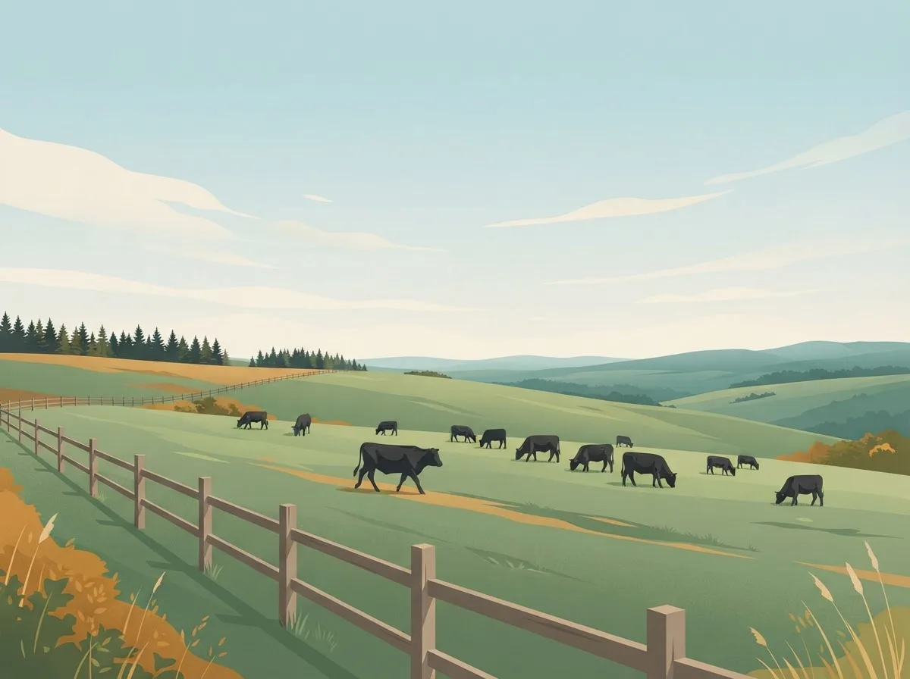
On the hill pasture — 放牧地にて
02 — Beef
黒毛和種×ホル交雑「しまざき壮健牛」
通常より半年長い約30ヶ月の肥育期間。放牧地を歩かせて十分な運動をさせながら育てることで、赤身の旨味を引き出す壮健飼育を実践します。
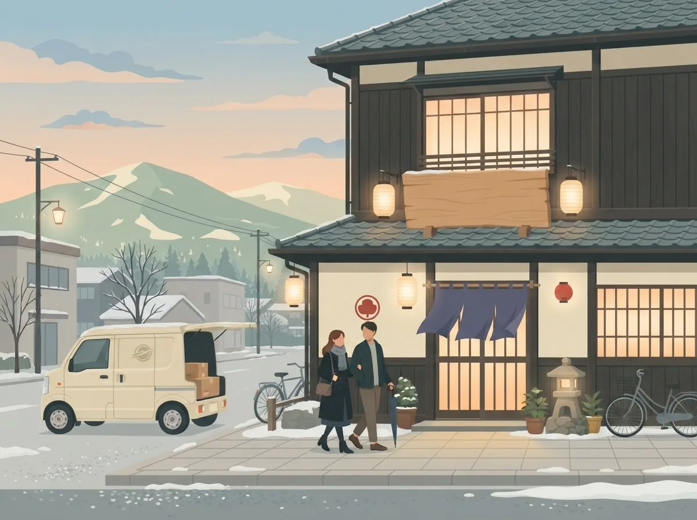
Dusk at Teshikaga — 弟子屈の直営店
03 — Process & Sales
直営焼肉店「牛肉本舗くろ」＋EC
2009年、弟子屈町に自社加工場を備えた直営焼肉店を開業。同時にECを立ち上げ、全国の消費者へ直接お届けする仕組みを整えました。
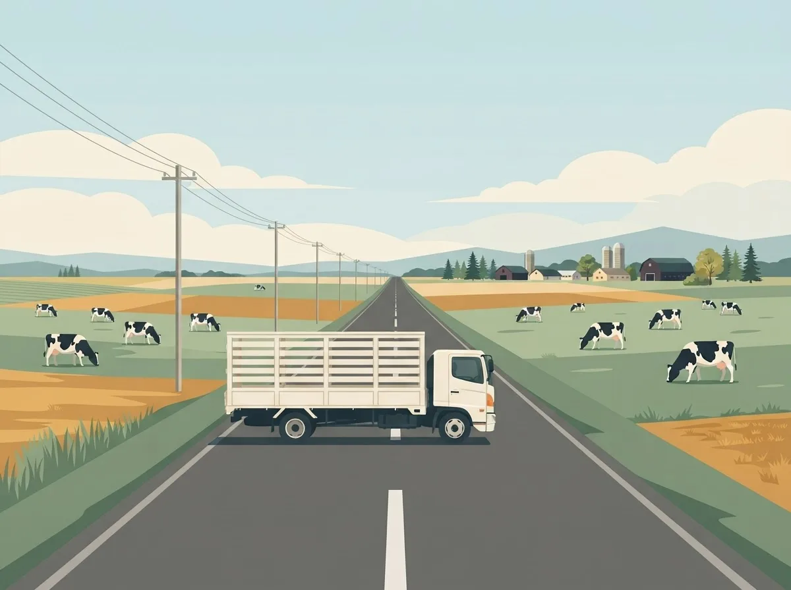
Between the farms — 牧場と牧場を繋ぐ
04 — Distribution
地域の畜産を流通から支える
二代目が家畜商の資格を取得して以来、子牛の売買や肥育事業を通じて、地域の健全な畜産経営の基盤づくりに貢献しています。
Our Brand
健やかで、壮らかに。別海の風と草と、半年長い肥育時間が育てる味。
放牧運動を取り入れた飼育方法と、約30ヶ月というじっくりした肥育時間が、その名にふさわしい肉質をつくります。
牛肉本舗 くろ
弟子屈町・直営焼肉店
生産者の店として、希少部位もその日の状態でご提供。
オンラインストア
shimazaki-gyu.com
全国配送・贈答にも。定期便のお問い合わせも受付中。
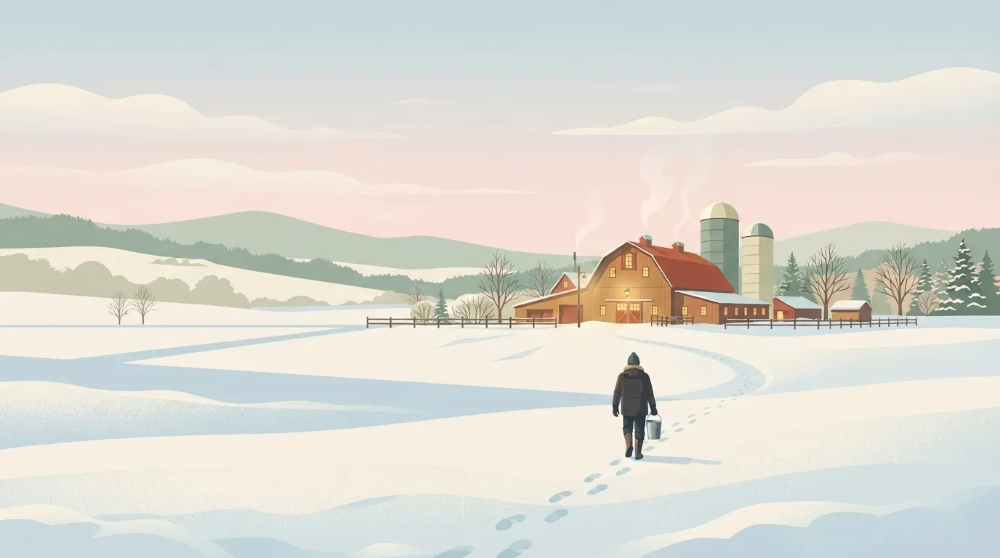
祖父が受け継いできた酪農を、
次の世代に渡したい。
三代目代表 島崎 洋介
With the Community
別海の地で、酪農家として、地域の一員として。小さな取り組みを、ひとつひとつ積み重ねています。
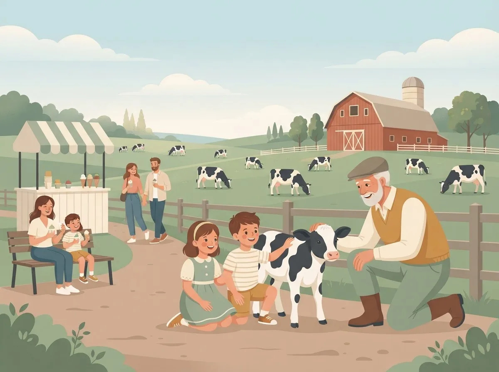
Open farm day — 牧場のひらく日
Chienowa gelato — ちえのわのジェラート
Project 01
別海の酪農家に呼びかけ、共同で立ち上げた組合。牛乳を牧場ごとに分けて売り、ジェラートを開発・販売。「自分で搾った牛乳がパックになって、従業員が飲む。美味しくないと困る」。スタッフの意識が変わりました。
2018年設立
組合員5名
Project 02
小中学生の職業体験を受け入れ、牛と暮らす日常、命の重みを伝える学びの場を提供しています。次世代への種まきとして。
2016年より
年間約350名
Project 03
地元中学校の家庭科授業に講師として参加。乳和食を題材に、地元の食材と食文化の魅力を伝えています。
2020年より
年2回
Project 04
別海町・近隣の飲食店と連携し、マルシェやイベントへ出店。地域の食を発信する継続的な取り組みです。
2015年より
年12回前後
Since 1948
1948
長野県出身。戦後まもない昭和23年、酪農開拓者として荒地を切り拓き、酪農を開始。
1980
機械化を進め、牧場の基盤を拡張。酪農・肉牛の二本柱を育てる。
2005
法人化。酪農部門・肉牛部門・家畜流通部門の3部門体制を確立。
2009
弟子屈町市街に直営店を開業。自社加工場を備え、全国の消費者へ直接発送する仕組みを整える。
2018
牧場主の呼びかけで地元酪農家有志と設立。搾りたて生乳のジェラート事業を展開。
2021
「祖父が受け継いできた酪農を守りたい」。研修牧場構想・ダイバーシティ推進を掲げ、新章へ。
2024
次世代に選ばれる酪農を目指し、新しい付加価値づくりへ。
Join Us
搾乳・育成・哺育の役割分業制で、未経験でも一歩ずつ。
研修牧場として、独立まで伴走します。
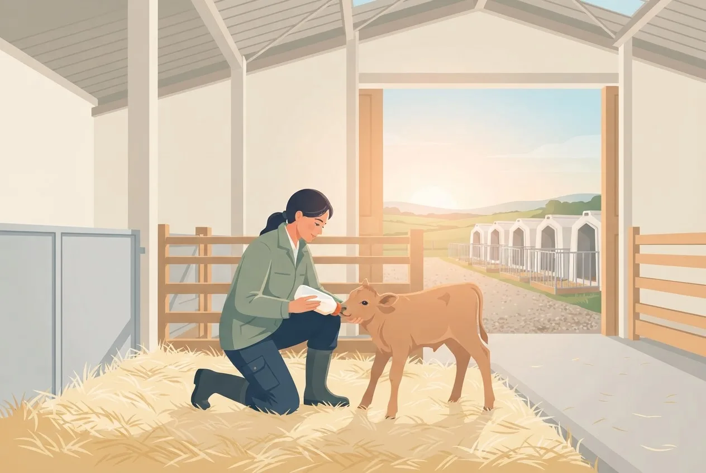
First light, first feeding — 朝いちばんの哺乳
搾乳／育成／哺育に分かれた業務体系で、未経験者も着実にステップアップ。
場長権限を明確化し、定例MTGで目標を共有。意思決定が早い。
スタッフ20人のうち15人が中国・ベトナム・フィリピン・インドネシアから。「言葉が違うだけ」。国籍・性別・経歴を問いません。
新規就農希望者を仲間として育て、独立まで伴走する仕組みを整備中。
正社員
パーラー・ロボット併用で、朝夕2回の搾乳を担当。日々の観察力が牛の健康を守ります。
月給 22万円〜
未経験可
正社員
子牛の哺育から育成までを担当。一頭ずつの成長を見守るやりがいのある仕事です。
月給 23万円〜
未経験可
正社員
将来の場長候補として、現場運営・人材育成・経営判断に携わっていただきます。
月給 30万円〜
畜産経験3年以上
研修生
研修牧場構想に基づき、独立就農まで伴走。住居・車両のサポートあり。
研修手当 月18万円〜
不問
01
フォームまたはお電話で。即日
02
履歴書・職務経歴書など。1〜3日
03
代表・場長と約1時間
04
2〜3日の体験就業。交通費支給
05
条件確認とすり合わせ
06
住居・引越しをサポート
約6割のスタッフが未経験入社です。OJTと役割分業制により、段階的に仕事を覚えられます。
社宅提供・引越し費用補助・車両購入補助など、移住を前提とした支援制度を整えています。
研修牧場構想として、独立就農までの伴走プログラムを準備中です。まずはご相談ください。
もちろん歓迎します。日程はお電話でお問い合わせください。
News
2026.09.16
ちえのわ
ちえのわ「取材ファイル file.02」で当牧場が紹介されました（紙面とショート動画「こだわりは、ない。」）
2026.08.22
イベント
「SHIMAZAKI MARCHE 2026」が牧場の西口倉庫前で開かれました
2026.05.30
受賞
ちえのわ交流会「ミルワングランプリ 2026」で第2位に選ばれました